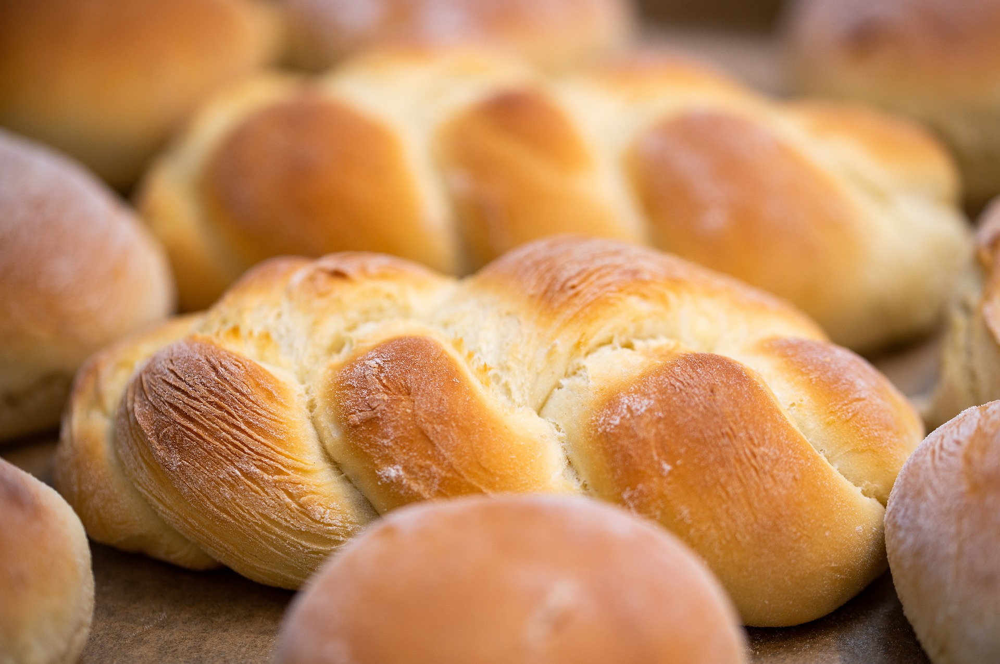
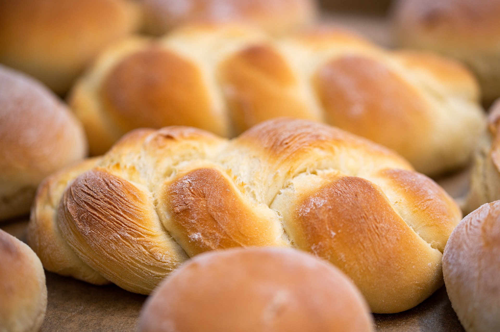

PADARIA
PURO SABOR

Bem Vindo
Aqui você encontrará as delícias mais fresquinhas e saborosas que só uma padaria de qualidade pode oferecer. Temos uma grande variedade de pães, bolos, doces e salgados, todos produzidos com ingredientes selecionados e muito carinho.

 
